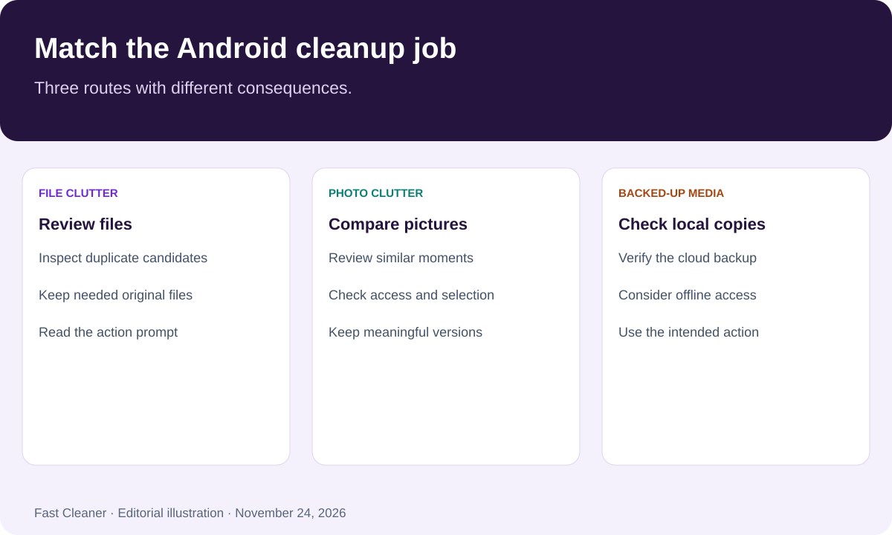
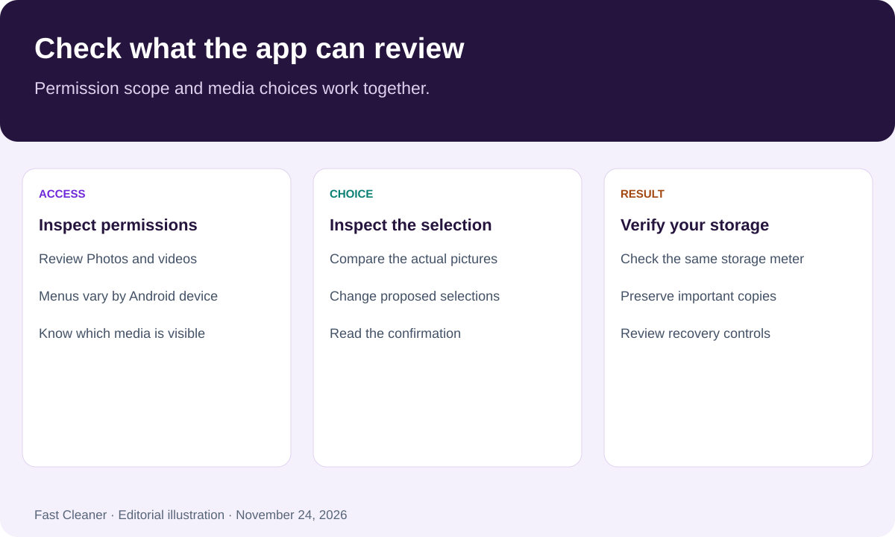

Which free Android cleaner should you start with?
Choose from the storage problem, rather than a universal “best cleaner” claim. Use Files by Google for duplicate-file and general file review, Fast Cleaner for its advertised photo-focused grouping, or Google Photos’ specific Free up space feature when verified cloud backup fits your needs.
These routes solve different jobs. Removing an unwanted duplicate, removing a local copy of a backed-up photo, and clearing temporary files are not interchangeable actions.
Platform and review scope: This guide covers Android. Fast Cleaner is listed on Google Play as Duplicate Photo Cleaner AI by CrocApps and is free on Android, as confirmed by the developer. Fast Cleaner publishes this guide; product functions below come from published descriptions, not a hands-on comparison. iPhone purchases and Apple Photos instructions do not apply here.
Compare the Android cleanup options
| Option | Task to consider | Check before removal |
|---|---|---|
| Files by Google | General file review and identified duplicate files | Inspect what is selected and which action is offered |
| Fast Cleaner for Android | Duplicate and similar photos, screenshots, blurry shots, and large-video review | Review groups and photo-access scope |
| Google Photos | Free up local space from media safely backed up | Verify backup; offline and gallery access can change |
| Your device’s storage settings | Find whether media, downloads, or apps dominate | Menus and controls vary by manufacturer |
This is a task-based shortlist, not a test of matching accuracy or speed. The iPhone cleaner shortlist covers different products and purchase terms; see the separate iPhone guide if that is your platform.
Files by Google: review duplicate files and other clutter
Google documents a duplicate-files workflow under Menu → Clean. Inspect the candidates, preserve the file marked Original, and read the confirmation before moving selected copies to Trash. Controls may differ in your version.
The cleanup action matters. Google warns that its junk-file cleanup is permanent. Do not assume that every file tool or cleanup category uses the same recovery behavior.
Fast Cleaner: evaluate a photo-review workflow
The Android listing describes duplicate and similar photos, screenshots, blurry images, large videos, and swipe review. It may fit if those media categories are what you want to inspect. We have not measured its matching accuracy against Files by Google.
Try a small set of backed-up pictures first. Compare expressions, edits, and text before choosing a copy. A suggested group is a reason to inspect pictures, not proof that all but one are unwanted.
The Android edition is free. The monthly and lifetime purchase figures elsewhere on this website describe the iPhone app; they are not Android prices. We do not assume the iPhone video-compression or contacts tools exist on Android.
Google Photos: remove local copies only when backup fits
Google Photos documents Free up space on this device for media safely backed up to the correct account. Verify the copies you need before confirming. This route removes eligible local copies, rather than deciding which pictures are unwanted.
Cloud-only items may not be accessible in another gallery or while offline. Deleting from the Google Photos library is a different decision. Choose local-copy removal only if keeping the cloud copy matches your plans.
Use a small, deliberate cleanup


Check device storage before and after the same batch. A large number of small screenshots may matter less than one unwanted recording. If app data dominates, handle it through the relevant app rather than expecting a photo cleaner to control every storage category.
Check Android permissions and disclosures
Open Settings → Apps → the app → Permissions to inspect available access controls, following Google’s instructions. Device menus vary. If you grant access to selected media, interpret results as covering that selection.
Fast Cleaner’s policy describes local media analysis and separate limited analytics. Read the policy with the store’s Data safety disclosure; labels and processing claims do not independently certify security.


Review your gallery on Android
Explore duplicate and similar-photo review, screenshots, blurry images, and large-video discovery in the Android listing.
Common questions
Is Fast Cleaner free on Android?
Yes, the developer confirms the Android edition is free. Its Google Play name is Duplicate Photo Cleaner AI by CrocApps. iPhone purchases are separate.
Will a cleaner make every part of Android faster?
This guide makes no performance promise. First identify whether unwanted media is the actual storage issue.
Can I use Apple Photos instructions on Android?
No. Android file managers, gallery apps, and Google Photos have different menus and behavior.
Which option is safest?
No security winner was tested here. Check permissions, backup, disclosures, and the exact removal action.
Sources and review method
Reviewed November 24, 2026. App listings can be cached; their descriptions are developer statements. Platform instructions document the named action, not a test of a third-party app. Android models, menus, permission options, and recovery controls can differ.